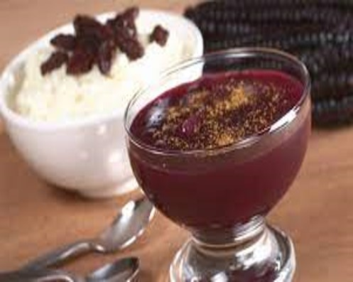
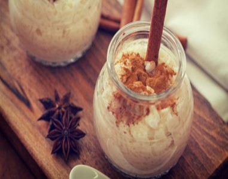
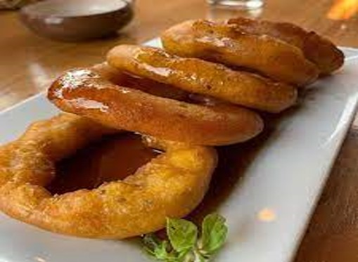

-
S/. 5.00
MAZAMORRA MORADA
Nuevo
Compuesto por maíz morado, canela, membrillos, piña y manzana, entre otros productos, la mazamorra morada se ha convertido en un postre esencial en la cocina peruana.
Preparado especialmente en octubre, para conmemorar el mes del Señor de los Milagros, suele ser servido con arroz de leche.
-
S/. 5.00
ARROZ CON LECHE
Nuevo
Un plato fundamental en la mayoría de los países hispanoparlantes y realmente influyente en la cocina peruana ya que el arroz es uno de los ingredientes más utilizados en dicha gastronomía.
Compuesto además por canela, leche evaporada y cáscaras de naranja, entre otros ingredientes.
-
S/. 5.00
PICARONES
Nuevo
Los picarones son un delicioso plato que mezcla la cultura española, con el uso de anillos de masa de harina de trigo, junto con el aporte de la cultura indígena gracias al uso del camote y del zapallo.